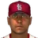

Major League Baseball · Depth chart & lineups
St. Louis Cardinals
← Team page · Payroll · Transactions
Based on games played and started through May 13, 2002. The OOTP export has no saved depth chart or lineup card, so this is derived from real usage. Lineups and depth chart list only players on the active roster now (26 players).
Most common lineups
For each batting-order spot, the active player who started there most often against that kind of starter (each player used once). Starts in spot = games he started in that spot out of the games against that hand. AVG/OBP/SLG: his season line with this club.
vs. right-handed starters 32 games
| # | Player | Pos | Starts in spot | AVG | OBP | SLG |
|---|---|---|---|---|---|---|
| 1 | Jermaine Dye | RF | 19 of 32 | .232 | .298 | .465 |
| 2 | SS | 19 of 32 | .263 | .315 | .382 | |
| 3 | C | 27 of 32 | .429 | .466 | .737 | |
| 4 | DH | 18 of 32 | .215 | .298 | .361 | |
| 5 | Ken Harvey | 1B | 22 of 32 | .239 | .310 | .308 |
| 6 | CF | 15 of 32 | .271 | .316 | .438 | |
| 7 | LF | 13 of 32 | .212 | .283 | .341 | |
| 8 | 2B | 11 of 32 | .217 | .250 | .325 | |
| 9 | 2B | 5 of 32 | .206 | .206 | .235 |
vs. left-handed starters 9 games
| # | Player | Pos | Starts in spot | AVG | OBP | SLG |
|---|---|---|---|---|---|---|
| 1 | Jermaine Dye | RF | 8 of 9 | .232 | .298 | .465 |
| 2 | SS | 6 of 9 | .263 | .315 | .382 | |
| 3 | C | 5 of 9 | .429 | .466 | .737 | |
| 4 | DH | 5 of 9 | .215 | .298 | .361 | |
| 5 | CF | 3 of 9 | .271 | .316 | .438 | |
| 6 | 3B | 5 of 9 | .262 | .319 | .437 | |
| 7 | 2B | 4 of 9 | .217 | .250 | .325 | |
| 8 | LF | 4 of 9 | .212 | .283 | .341 | |
| 9 |  Noe Munoz | C | 2 of 9 | .133 | .278 | .200 |
Depth chart games started by position through May 13
| Pos | Role | Player | GS at pos | G | AVG | OBP | SLG | HR |
|---|---|---|---|---|---|---|---|---|
| C | Starter | 32 | 36 | .429 | .466 | .737 | 8 | |
| Backup 1 | Noe Munoz | 9 | 10 | .133 | .278 | .200 | 0 | |
| 1B | Starter | Ken Harvey | 31 | 31 | .239 | .310 | .308 | 1 |
| Backup 1 | 5 | 6 | .450 | .478 | .700 | 1 | ||
| Backup 2 | Kevin Barker | 4 | 10 | .138 | .219 | .172 | 0 | |
| Backup 3 | 0 | 16 | .158 | .217 | .158 | 0 | ||
| 2B | Starter | 16 | 24 | .217 | .250 | .325 | 2 | |
| Backup 1 | 9 | 10 | .206 | .206 | .235 | 0 | ||
| Backup 2 | 7 | 38 | .263 | .315 | .382 | 2 | ||
| 3B | Starter | 29 | 32 | .262 | .319 | .437 | 4 | |
| Backup 1 | 3 | 24 | .217 | .250 | .325 | 2 | ||
| SS | Starter | 29 | 38 | .263 | .315 | .382 | 2 | |
| Backup 1 | 1 | 10 | .206 | .206 | .235 | 0 | ||
| Backup 2 | 0 | 36 | .429 | .466 | .737 | 8 | ||
| LF | Starter | 38 | 38 | .212 | .283 | .341 | 2 | |
| Backup 1 | 2 | 41 | .215 | .298 | .361 | 4 | ||
| Backup 2 | 1 | 24 | .217 | .250 | .325 | 2 | ||
| Backup 3 | Kevin Barker | 0 | 10 | .138 | .219 | .172 | 0 | |
| CF | Starter | 38 | 38 | .271 | .316 | .438 | 3 | |
| Backup 1 | Kevin Barker | 1 | 10 | .138 | .219 | .172 | 0 | |
| Backup 2 | 1 | 16 | .158 | .217 | .158 | 0 | ||
| Backup 3 | 1 | 24 | .217 | .250 | .325 | 2 | ||
| RF | Starter | Jermaine Dye | 38 | 40 | .232 | .298 | .465 | 8 |
| Backup 1 | 3 | 41 | .215 | .298 | .361 | 4 | ||
| Backup 2 | Kevin Barker | 0 | 10 | .138 | .219 | .172 | 0 | |
| Backup 3 | 0 | 36 | .429 | .466 | .737 | 8 | ||
| DH | Starter | 36 | 41 | .215 | .298 | .361 | 4 | |
| Backup 1 | Kevin Barker | 2 | 10 | .138 | .219 | .172 | 0 | |
| Backup 2 | 2 | 24 | .217 | .250 | .325 | 2 | ||
| Backup 3 | 1 | 16 | .158 | .217 | .158 | 0 |
Rotation OOTP projected starters (projected_starting_pitchers.csv)
| # | Pitcher | Active | GS | W-L | IP | ERA | WHIP | K |
|---|---|---|---|---|---|---|---|---|
| 1 | Yes | 7 | 2-3 | 38.0 | 4.74 | 1.74 | 24 | |
| 2 | Yes | 9 | 0-7 | 60.1 | 4.33 | 1.18 | 34 | |
| 3 | Yes | 7 | 3-3 | 39.0 | 3.46 | 1.77 | 27 | |
| 4 | Yes | 9 | 5-3 | 61.2 | 2.34 | 0.92 | 33 | |
| 5 | Yes | 9 | 4-3 | 49.1 | 4.20 | 1.32 | 30 |
Bullpen roles from usage: closer = most saves, setup = most holds, long relief = most innings per outing (1.1+ IP)
| Role | Pitcher | Throws | G | SV | HLD | IP | IP/G | ERA | K |
|---|---|---|---|---|---|---|---|---|---|
| Closer | RHP | 15 | 6 | 1 | 14.1 | 1.0 | 3.14 | 22 | |
| Setup | Darren Holmes | RHP | 15 | 0 | 3 | 19.0 | 1.3 | 0.95 | 15 |
| Setup | RHP | 12 | 1 | 4 | 15.1 | 1.3 | 4.70 | 15 | |
| Long relief | RHP | 12 | 0 | 0 | 19.0 | 1.6 | 5.21 | 5 | |
| Long relief | Brandon Lyon | RHP | 9 | 0 | 1 | 14.0 | 1.6 | 2.57 | 7 |
| Middle relief | Justin Duchscherer | RHP | 14 | 1 | 0 | 17.0 | 1.2 | 0.00 | 14 |
| Middle relief | LHP | 3 | 0 | 0 | 2.0 | 0.7 | 13.50 | 1 |
Bench active position players outside the regular lineups
| Player | Pos | G | PA | AVG | OBP | SLG |
|---|---|---|---|---|---|---|
| Kevin Barker | RF | 10 | 32 | .138 | .219 | .172 |
| 1B | 6 | 23 | .450 | .478 | .700 | |
| LF | 16 | 23 | .158 | .217 | .158 |
Injured list
Nobody on the injured list.